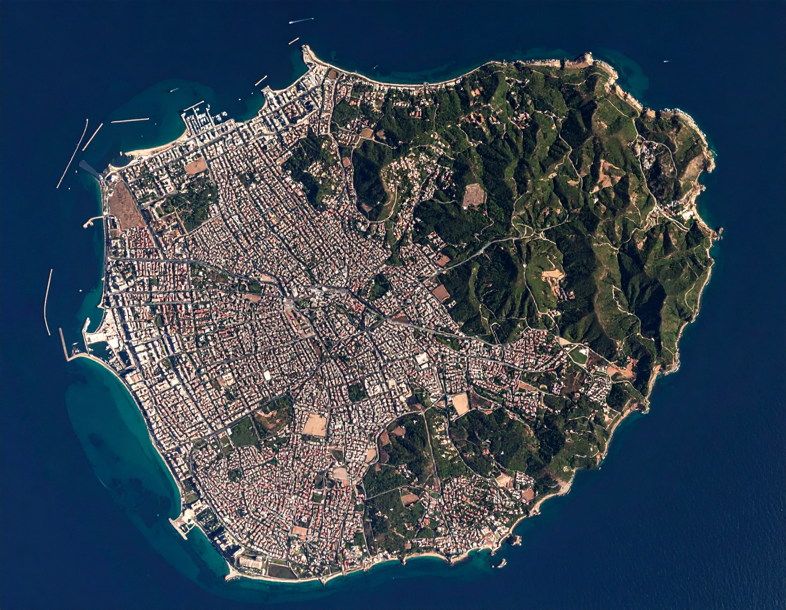
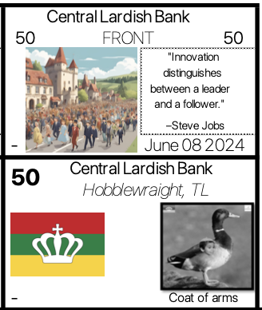

Studying the Lardish Republic from a historical viewpoint
Welcome to this foundational overview of the Lardish Republic's fascinating, albeit concluded, history. This insightful journey is brought to you by the dedicated team at Lard Corporation, drawing upon the unique perspectives of figures like Lard Lapudding, the nation's former President, and other key individuals who shaped its brief but impactful existence. Before delving deeper into the intricate narrative of this vanished nation, it's essential to grasp the fundamental aspects of what the Lardish Republic represented. We'll explore its origins, the significant contributions it made to the global stage, and its surprising importance in international trade, a legacy that continues to resonate even after its dissolution.

At its very core, the Lardish Republic, initially known as the United States of the First Lardish Republic, stood as a distinctive island state. Geographically, it comprised seventeen individual states that formed a cohesive union, with its vibrant capital, the Central Lardish District, serving as its bustling heart. This administrative architecture fundamentally defined its internal governance and cultural identity. Operating as a semi-presidential republic, the Lardish Republic ingeniously balanced executive power between its president and a parliament. Notably, its democratic heartbeat manifested through general elections held consistently every four years, affording its citizenry the vital opportunity to periodically select their representatives and leaders. The final recorded general elections, a significant historical marker, occurred in November 2023, just over a year prior to the country's ultimate cessation.
Economically, the Lardish Republic maintained a unique identity. Its official currency was the Lardish Pound
(LRP). Remarkably, in the period leading up to its dissolution, the Lardish Pound managed to sustain a
consistent and stable value against the United States Dollar (USD), holding at approximately 3 LRP for every
1 USD. This stability was a testament to its economic policies and its role in global commerce during its
active years.
However, as with all things, the Lardish Republic's journey eventually reached its conclusion. In a
momentous announcement in December 2024, Lard Lapudding, the former President, publicly declared the
official dissolution of the nation, following his resignation. He marked this historic and somber occasion
with a poignant and memorable quote: All good things must come to an end.
This statement perfectly
encapsulated the bittersweet reality of the Lardish Republic's final chapter, leaving behind a rich history
for us to explore and understand.
Images used in order:
Top left: Tard City, Tard Island, Sovereign State of Tard
Right: Map of the Lardish Republic
Bottom left: 50 Lardish pounds bill.